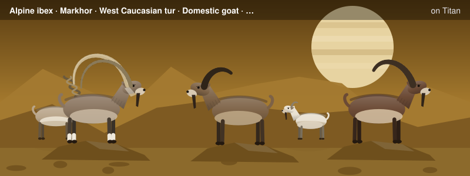
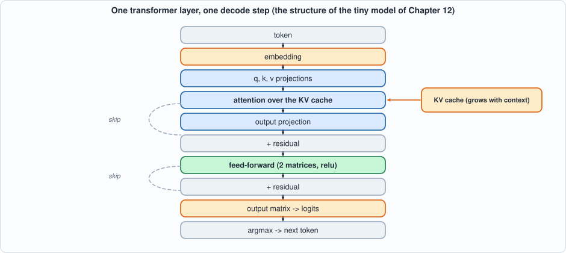
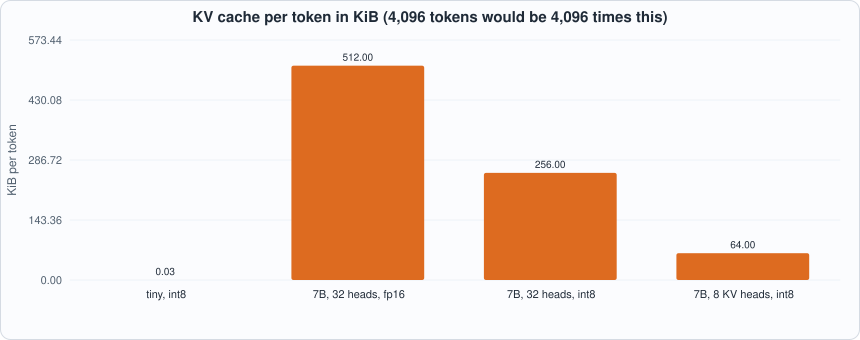

Appendix E. Transformers and LLM Inference¶

About the animals in this picture and where they are standing
- Alpine ibex (Capra ibex) lives in the European Alps, usually above the tree line on steep rock, and is a famously sure-footed climber. Males carry horns that can reach about a metre. Hunting left only a small remnant, around the Gran Paradiso in Italy, by the early 1800s; reintroductions have since restored it across the Alps.
- Markhor (Capra falconeri) lives in the mountains of Pakistan, Afghanistan and neighbouring regions. The males' horns twist in a corkscrew; the name is often explained as Persian for 'snake-eater'. It is Pakistan's national animal, and community-based conservation has helped some populations recover.
- West Caucasian tur (Capra caucasica) lives only in the western Caucasus, on steep slopes above the forest line. Its horns are short and heavy, curving outward and back, and it moves up and down cliffs with ease.
- Domestic goat (Capra hircus) descends from the bezoar ibex and is among the oldest domesticated animals. There are on the order of a billion of them, kept for milk, meat, fibre and as pack animals.
- Walia ibex (Capra walie) lives nowhere but the Simien Mountains of northern Ethiopia, on high cliffs. It is endangered, with only a few hundred animals remaining, and is protected within the Simien Mountains National Park.
The scene is imaginary: it is set on Titan, Saturn's largest moon: a thick orange haze, and lakes of liquid methane and ethane on its surface. The animals are stylised drawings, shown where they could not live, for effect.
Who this is for: readers who want the model-side background of Chapters 6, 8, 9, 12 and 14-17: what a transformer language model computes, what a decode step costs, and why serving it is a memory problem. The running model is the tiny model of Chapter 12 (the numbers in the first parts come from running it), scaled up by formula to real sizes. tools/appx_e.py produces every number.
What a language model does¶
A language model reads a sequence of tokens (pieces of text, mapped to integers by a fixed vocabulary) and produces, for the next position, a score for every token in the vocabulary (the logits). Generation repeats: feed the tokens so far, pick the next token, append it, repeat. Greedy decoding picks the largest logit; sampling draws a token in proportion to the softmax of the logits (Appendix D). This book decodes greedily so that its tests have a deterministic answer.
The structure of one layer¶
A transformer is a stack of identical layers. Each has two blocks, each wrapped in a residual connection (the block's output is added to its input, so the input flows through unchanged and the block learns a correction):

Figure E.1: one decode step of one layer. The tiny model of Chapter 12 has exactly this structure (and no layer normalization, which Capra lacks).- Embedding. The token's integer indexes a row of a table: a vector of
dnumbers. - Attention. Three projections give the token's query, key and value. The key and value are appended to the KV cache; the query is compared with all cached keys (dot products, scaled), the scores go through softmax, and the output is the weighted average of the cached values (Appendix D). Attention is the only place where tokens interact. Several heads run in parallel on slices of the vectors; an output projection mixes them.
- Feed-forward network (FFN). Two matrices with an elementwise nonlinearity between them, applied to each token independently:
relu(h W1) W2. It holds most of the parameters. (A mixture of experts, Chapter 17, replaces it by several and picks one per token.) - Output matrix. The final vector times a
d x vocabularymatrix gives the logits.
Counting parameters¶
A layer has 4 d^2 attention weights (the q, k, v and output projections) and 2 d f FFN weights (f is the hidden width, usually about 4d; modern models use a gated FFN with three matrices, 3 d f), plus embeddings and the output matrix (2 V d). The script checks the formula against the tiny model's actual weights (2,560 numbers; the chip's 2,304 are these minus the embedding table, which the host holds) and applies it to larger configurations: a 125M-class model comes to about 162 million parameters, a 7B-class model (32 layers, d = 4096) to 6.74 billion.
The KV cache¶
Without a cache, each new token would redo the keys and values of every earlier token. With one, each token's key and value are computed once and stored: per token, per layer, kv_heads * head_width numbers each for K and V. For a 7B-class model with 32 KV heads, 128 wide, int8: 256 KiB per token, so a 4,096-token context is 1 GiB per request. Sharing keys and values across heads (Chapter 14) cuts it by the sharing factor; a sliding window (Chapter 15) bounds it; both are covered by the arithmetic in the figure:

Figure E.2: the cache per token for the tiny model and three 7B-class variants (fp16 with 32 heads; int8 with 32 heads; int8 with 8 KV heads).Prefill and decode¶
Two phases have opposite character. Prefill processes the whole prompt at once: its matrices have many rows (one per prompt token), so every weight is reused across them, and the work is arithmetic-bound. Decode produces one token per pass: the matrices have one row, every weight is read and used once, and the work is memory-bound. For a 7B-class model the script prints 3,316 G multiply-adds for a 512-token prefill and 6.5 G for one decode step, against the same 6.5 GB of weights to read: 512 operations per weight byte against 1.
Decode is therefore the problem every chapter of Part 6 attacks from a different side: fewer bytes per weight (int4, Chapter 13), a smaller cache (GQA and windows, Chapters 14-15), more tokens per pass over the weights (speculation, Chapter 16), fewer weights read per token (experts, Chapter 17) and, in Chapter 9, more requests per pass (batching).
The decode loop¶
tokens = prompt
repeat:
logits = model(last token, KV cache) # one decode step
next = argmax(logits) # or a sample
append the new key and value to the cache
tokens.append(next)
The loop is inherently sequential: token t+1 needs token t. The host program in Chapter 12 is this loop; the chip runs the model step.
Layer normalization (not in the tiny model)¶
Real transformers also normalize each vector before each block: x -> (x - mean) / sqrt(variance + eps) * gain, keeping the activations at a stable scale. It needs a reciprocal square root, which is a divider with a lookup table (Chapter 6); Capra has no operation for it, so the tiny model omits it. This is one of the ways the model is smaller than a real one, along with having no training: its weights are constructed so the answer is known (Chapter 12).
Running the examples¶
#!/usr/bin/env python3
"""Appendix E (transformers and LLM inference): runnable checks, tied to the book's tiny model. Usage: appx_e.py"""
import math, os, sys
sys.path.insert(0, os.path.join(os.path.dirname(os.path.abspath(__file__)), "..", "model"))
import tiny_lm as T
print("== 1. the pipeline of one decode step, with the tiny model of Chapter 12 (vocabulary 16, width 16, feed-forward width 32, one layer, one head)")
m = T.make_model("structured"); tok = 5; x = m["E"][tok]; lg, k, v, aux = T.float_step(m, tok, [], [])
print(f" token {tok} -> embedding row (16 numbers, norm {math.sqrt(sum(a * a for a in x)):.2f}) -> q, k, v (16 numbers each) -> attention over the cache (1 token so far)")
print(f" -> attention output added to the embedding (residual) -> feed-forward block added again (residual) -> 16 logits -> argmax = token {lg.index(max(lg))} (the designed rule says f(5) = {T.f_next(5)})")
print("\n== 2. count the parameters: a transformer layer has 4 d^2 attention weights and 2 d f feed-forward weights; plus embeddings and the output matrix")
cnt = {nm: sum(len(r) for r in m[nm]) for nm in ("Wq", "Wk", "Wv", "Wo", "W1", "W2", "Wout")}; cnt["E"] = sum(len(r) for r in m["E"]); d, f_, V = 16, 32, 16
formula = 4 * d * d + 2 * d * f_ + V * d + d * V
print(f" tiny model, counted: {cnt}; total {sum(cnt.values())}; formula 4 d^2 + 2 d f + 2 V d = {formula}: {sum(cnt.values()) == formula}")
print(f" {'model':26s} {'layers':>6s} {'d':>6s} {'ffn':>7s} {'vocab':>7s} {'parameters':>13s}")
for nm, L, d, f, Vv in (("tiny (this book)", 1, 16, 32, 16), ("a 125M-class model", 12, 768, 3072, 50000), ("a 7B-class model", 32, 4096, 11008, 32000)):
P = L * (4 * d * d + 3 * d * f if nm.startswith("a 7B") else 4 * d * d + 2 * d * f) + 2 * Vv * d; print(f" {nm:26s} {L:6d} {d:6d} {f:7d} {Vv:7d} {P:13,d}")
print(" (the 7B-class row uses a gated feed-forward block with three matrices, 3 d f, as modern models do; the other rows use two)")
print("\n== 3. the KV cache: for every token, every layer stores one key and one value vector per KV head")
print(" bytes per token = 2 (K and V) x layers x kv_heads x head_width x bytes_per_number")
for nm, L, kvh, hw, nb in (("tiny model, int8", 1, 1, 16, 1), ("7B-class, 32 heads, fp16", 32, 32, 128, 2), ("7B-class, 32 heads, int8", 32, 32, 128, 1), ("7B-class, 8 KV heads, int8 (GQA)", 32, 8, 128, 1)):
b = 2 * L * kvh * hw * nb; print(f" {nm:34s}: {b:9,d} bytes per token = {b / 1024:7.0f} KiB; a 4,096-token context: {b * 4096 / 2**20:9.1f} MiB")
print("\n== 4. prefill against decode: processing the prompt is a matrix-matrix product (many tokens at once); generating is a matrix-vector product (one token at a time)")
d, f, L = 4096, 11008, 32; w = L * (4 * d * d + 3 * d * f)
for name, n in (("prefill, prompt of 512 tokens", 512), ("decode, one token", 1)):
ops = n * w; by = w; print(f" {name:32s}: {ops / 1e9:9.1f} G multiply-adds, reads the {w / 1e9:.1f} GB of weights once: {ops / by:7.1f} ops per weight byte")
print(" decode does as much memory work as prefill and 1/512 of the arithmetic; this is why decoding is limited by memory bandwidth (Chapter 9) and why batching, speculation and mixtures of experts exist (Chapters 9, 16, 17)")
print("\n== 5. the decode loop (greedy), as the host runs it in Chapter 12")
toks = T.float_generate(m, 0, 10); print(f" start token 0; each step feeds the last token, appends its key and value to the cache, takes the argmax of the logits: {toks}")
print(" the loop is inherently sequential: token t+1 needs token t")
print("\n== 6. greedy against sampled decoding: the same logits, two rules")
import random; R = random.Random(1); lg2 = [3.0, 2.0, 0.5, 0.0]; mx = max(lg2); e = [math.exp(x - mx) for x in lg2]; p = [x / sum(e) for x in e]
print(f" logits {lg2} -> probabilities {[round(x, 3) for x in p]}; greedy always picks index {lg2.index(mx)}; sampling picks index 0 about {100 * p[0]:.0f}% of the time:")
draws = [R.choices(range(4), weights=p)[0] for _ in range(10000)]; print(f" 10,000 samples: {[round(draws.count(i) / 100, 1) for i in range(4)]} % for indices 0..3")
print(" (this book decodes greedily: its tests need a deterministic answer)")
print("\n== 7. layer normalization, which the tiny model leaves out because Capra has no operation for it: x -> (x - mean) / sqrt(variance + eps) * gain")
xs = [2.0, -1.0, 0.5, 4.5]; mu = sum(xs) / 4; var = sum((a - mu) ** 2 for a in xs) / 4; ln = [(a - mu) / math.sqrt(var + 1e-5) for a in xs]; print(f" {xs} -> {[round(a, 3) for a in ln]} (mean {sum(ln)/4:+.4f}, variance {sum(a * a for a in ln)/4:.4f}); it needs a reciprocal square root, which is a divider with a table (Chapter 6)")
To compile and run: python3 tools/appx_e.py (instant). Recorded output:
== 1. the pipeline of one decode step, with the tiny model of Chapter 12 (vocabulary 16, width 16, feed-forward width 32, one layer, one head)
token 5 -> embedding row (16 numbers, norm 1.00) -> q, k, v (16 numbers each) -> attention over the cache (1 token so far)
-> attention output added to the embedding (residual) -> feed-forward block added again (residual) -> 16 logits -> argmax = token 12 (the designed rule says f(5) = 12)
== 2. count the parameters: a transformer layer has 4 d^2 attention weights and 2 d f feed-forward weights; plus embeddings and the output matrix
tiny model, counted: {'Wq': 256, 'Wk': 256, 'Wv': 256, 'Wo': 256, 'W1': 512, 'W2': 512, 'Wout': 256, 'E': 256}; total 2560; formula 4 d^2 + 2 d f + 2 V d = 2560: True
model layers d ffn vocab parameters
tiny (this book) 1 16 32 16 2,560
a 125M-class model 12 768 3072 50000 161,734,656
a 7B-class model 32 4096 11008 32000 6,738,149,376
(the 7B-class row uses a gated feed-forward block with three matrices, 3 d f, as modern models do; the other rows use two)
== 3. the KV cache: for every token, every layer stores one key and one value vector per KV head
bytes per token = 2 (K and V) x layers x kv_heads x head_width x bytes_per_number
tiny model, int8 : 32 bytes per token = 0 KiB; a 4,096-token context: 0.1 MiB
7B-class, 32 heads, fp16 : 524,288 bytes per token = 512 KiB; a 4,096-token context: 2048.0 MiB
7B-class, 32 heads, int8 : 262,144 bytes per token = 256 KiB; a 4,096-token context: 1024.0 MiB
7B-class, 8 KV heads, int8 (GQA) : 65,536 bytes per token = 64 KiB; a 4,096-token context: 256.0 MiB
== 4. prefill against decode: processing the prompt is a matrix-matrix product (many tokens at once); generating is a matrix-vector product (one token at a time)
prefill, prompt of 512 tokens : 3315.7 G multiply-adds, reads the 6.5 GB of weights once: 512.0 ops per weight byte
decode, one token : 6.5 G multiply-adds, reads the 6.5 GB of weights once: 1.0 ops per weight byte
decode does as much memory work as prefill and 1/512 of the arithmetic; this is why decoding is limited by memory bandwidth (Chapter 9) and why batching, speculation and mixtures of experts exist (Chapters 9, 16, 17)
== 5. the decode loop (greedy), as the host runs it in Chapter 12
start token 0; each step feeds the last token, appends its key and value to the cache, takes the argmax of the logits: [0, 3, 2, 13, 4, 7, 6, 1, 8, 11, 10]
the loop is inherently sequential: token t+1 needs token t
== 6. greedy against sampled decoding: the same logits, two rules
logits [3.0, 2.0, 0.5, 0.0] -> probabilities [0.667, 0.245, 0.055, 0.033]; greedy always picks index 0; sampling picks index 0 about 67% of the time:
10,000 samples: [67.0, 24.0, 5.4, 3.5] % for indices 0..3
(this book decodes greedily: its tests need a deterministic answer)
== 7. layer normalization, which the tiny model leaves out because Capra has no operation for it: x -> (x - mean) / sqrt(variance + eps) * gain
[2.0, -1.0, 0.5, 4.5] -> [0.246, -1.231, -0.492, 1.477] (mean +0.0000, variance 1.0000); it needs a reciprocal square root, which is a divider with a table (Chapter 6)
Self-check questions¶
- Count the parameters of a model with 24 layers,
d = 1024,f = 4096(two-matrix FFN) and a vocabulary of 50,000, with a separate output matrix. - Why does the attention of token t only look at tokens up to t? What stops it looking ahead during decode?
- Compute the KV cache per token of a model with 40 layers, 8 KV heads of width 128, in int8. How many requests of 8,192 tokens fit in 24 GiB?
- Why is decode memory-bound but prefill not? Express it as operations per weight byte.
- A residual connection adds the block's output to its input. What would happen to the signal after 100 layers without them?
- Greedy against sampling: which gives the same output twice, and why does a test suite care?